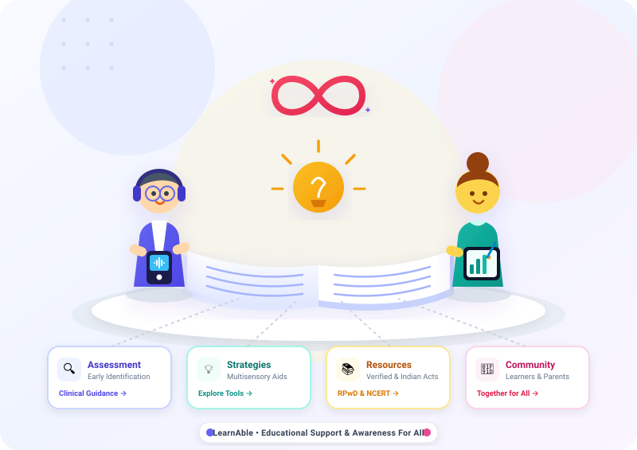

Community Engagement Project | B.Sc. IT
Understanding Learning Differences Starts With Awareness
Learn about learning disabilities, explore evidence-based educational strategies, understand the assessment pathway, and connect with verified support resources.

Personalized Guidance
Choose Your Support Pathway
I am a Learner
Study strategies, reading and writing accommodations, memory techniques, and exam confidence-building tips.
I am a Parent / Caregiver
Practical guidance on positive communication, supportive homework routines, and navigating professional assessment.
I am an Educator
Inclusive classroom methods, differentiated instruction techniques, and collaborative parent-teacher strategies.
Core Understanding
What Are Learning Disabilities?
A learning disability is a neurological difference in how an individual's brain receives, processes, and communicates information. It may affect reading (dyslexia), writing (dysgraphia), or mathematical calculations (dyscalculia).
These difficulties are persistent and may impact academic performance, but they do NOT indicate low intelligence or lack of motivation. With early identification and structured accommodations, students thrive.
Key Takeaway
Intelligence and learning speed are independent. A student facing challenges in one specific academic area can have exceptional capabilities in creative thinking, visual problem solving, or leadership.
Academic Impact
Common Learning Areas
Reading
Possible difficulty decoding phonics, reading fluency, and text comprehension.
Writing
Possible difficulty with letter formation, spatial spacing, or written expression.
Spelling
Possible difficulty recalling phoneme patterns and visual word memory.
Comprehension
Possible difficulty retaining multi-step verbal or written instructions.
Mathematics
Possible difficulty with number sense, arithmetic facts, or time concepts.
Our Mission
Support That Is Clear, Respectful, and Practical
Awareness
Accessible information demystifying learning differences and breaking stigma.
Pathway
Clear step-by-step guidance on when and how to seek qualified professional assessment.
Support
Evidence-based strategies tailored for classrooms, home environments, and independent study.
Resources
Curated directory of verified government, NGO, and academic support organizations.
Structured Process
The 8-Step Assessment Pathway
Notice persistent difficulty: Observe ongoing struggles across multiple assignments and settings.
Initial dialogue: Collaborative conversation between parents, class teachers, and the student.
Classroom accommodations: Implementing targeted multi-sensory teaching adjustments.
Professional consultation: Engaging clinical psychologists or certified special educators.
Formal psycho-educational evaluation: Comprehensive standardized assessment battery.
Understanding results: Reviewing the diagnostic profile with a strengths-based approach.
Remedial intervention & IEP: Tailoring individualized educational plans and board concessions.
Ongoing review: Regular progress monitoring and positive reinforcement.
Interactive Module
Learning Differences Awareness Activity
Engage with a 10-question educational awareness quiz to test your understanding of learning differences, myths, and supportive strategies.
Start the ActivityFrequently Asked Questions
Common Questions & Facts
What is a learning disability?
It is a neurodevelopmental difference in how the brain processes, stores, and communicates information. It commonly affects reading, writing, spelling, comprehension, or mathematical concepts.
Does having a learning disability mean low intelligence?
No. People with learning differences have average to above-average intelligence. With structured instruction and accommodations, they achieve remarkable success across academic and professional fields.
Who is qualified to conduct an assessment?
Formal assessments are conducted by licensed clinical psychologists, neuropsychologists, and certified special educators working in authorized hospitals, clinics, and government child development centers.
Can this website diagnose a learning disability?
No. LearnAble is strictly an educational awareness resource. It does not provide clinical diagnosis or replace formal evaluation.
Community Collaboration
Community Feedback
Help us improve by sharing your thoughts, experiences, and suggestions for new educational materials.
Share Your Feedback